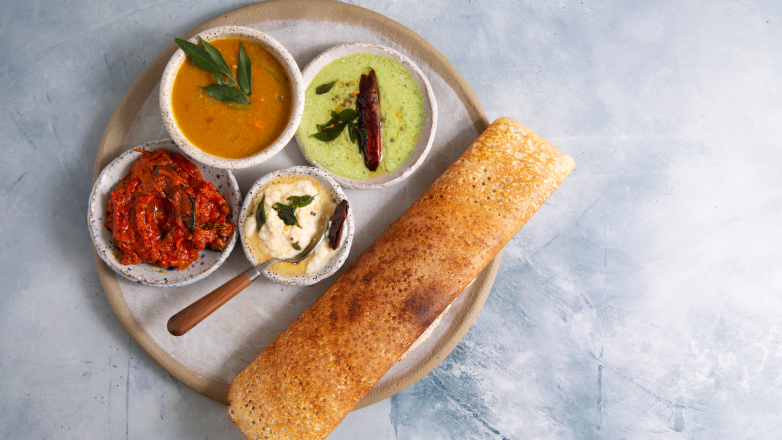
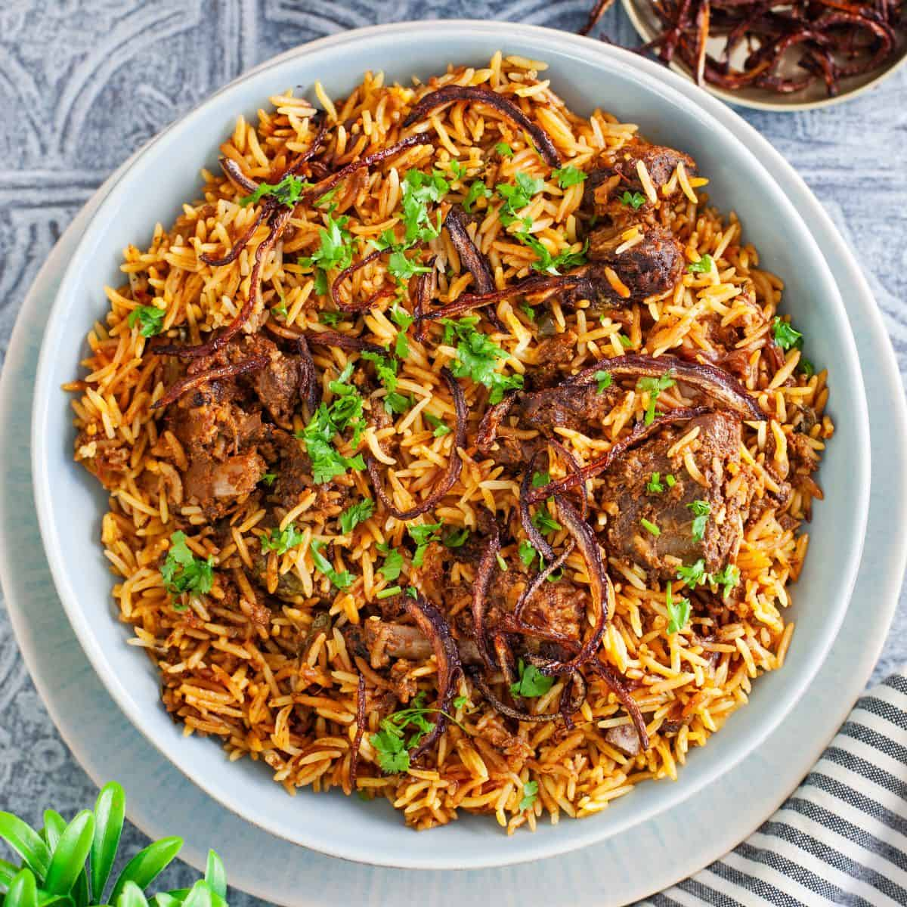

Vizag is known for its spicy and flavorful Andhra cuisine. Fresh seafood is a highlight, especially fish and prawn curries. You’ll also find delicious street food like punugulu and traditional meals served on banana leaves.

Figure 5: Andhra-style fish curry — a Vizag specialty.

Figure 6: A typical vegetarian Andhra thali served in Vizag.